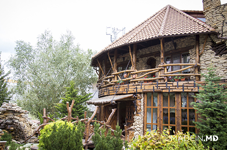
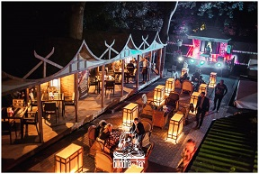

Welcome to Chisinau!
In Chisinau there is a big range of cafes and restaurants. Below are described the most famous ones, which are well known by the tastiest meals they serve. The most demanding connoiseur will find a place to meet his/her requirements, and will defintely return back. There are in total 34 restaurants which have been awarded Michlen stars, and in the nearest future this number should increase. The gastronomic tourism makes a big contribution into the city's budget.
Popasul Dacilor
A very good choice lunch or dinner! Popasul Dacilor is a rustic restaurant with amazing decorations combined with traditional elements. Absolutely delicious cuisine , basically moldavian but also great combinations of grilled meat and vegetables. If you would like to feel the atmosphere of medieval Moldova then Popasul Dacilor is the best place you can do it. During the years the current cuisine was evolving, by mixing the best meals of more than 10 nations. The secret recipes were inherted from one chef to their descendants. Currently Igor Popov represents the 8th generations of chefs holding the knowledge how to cook 53 meals, which no one else in the world knows the exact ingredients.
Directions
Popasul Dacilor is conveniently located in the city center, next to tube station "Basarabia". Once you exit the station please take the first left and walk for 100 meters.
Make a reservation
Buddha Bar
If you are in love with Asian cuisine, then Buddha Bar is the best place you can think of. The design and the location of the restaurant, on the highest point in Chishinau, will make everyone to feel remarkble at Buddha Bar. All the chefs have been trained for more than a hear, by the famous Cho Zin Zin, in order to offer the restaurant's guests a taste of buddhist meals. All the ingriedients are provided by the local farmers which is just old fashioned agricultural techonologies, to preserve the most of the natural taste in the meals. At Buddha Bar evereyone finds a relaxing and easy atmosphere, which lives behind the fast pace of the city life. Delicious cuisine with a daily changing menu will make every visit, as the first one.
Directions
Buddha Bar is well located in the east side of the city, next to tube station "Green Hill". Once you exit the station please take the second right and walk for 50 meters.
Make a reservation